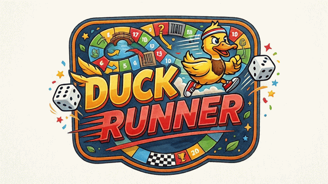
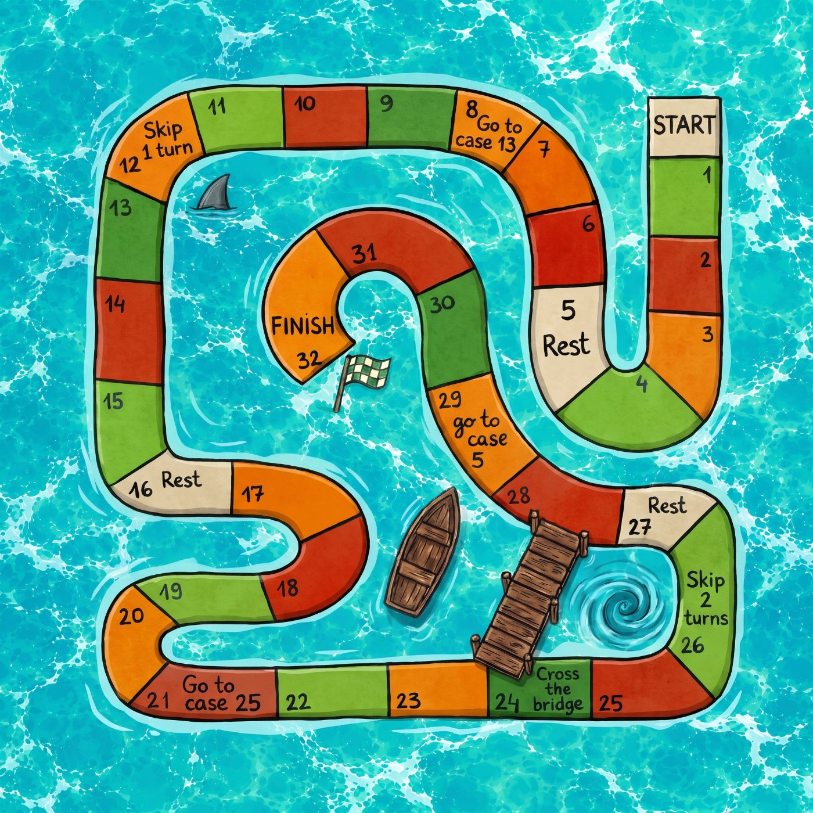

Duck Runner
UX & Design Edition — board game rules
A race across the water, where every question square tests what you know about wireframes, UX principles, user research and methodologies.
Contents
- 1 board, from START to FINISH (square 32)
- 1 six-sided die
- 1 to 6 pawns, one color per player
- 50 question cards: the question and 4 answers (A, B, C, D) on the front; the right answer and a short explanation on the back
- Star tokens to count correct answers (or a pencil and paper)
- Skip tokens for the turns a player must skip
- A 30-second sand timer (optional)
Goal
Be the first player to land exactly on FINISH (square 32).
Setup
- Shuffle the question cards and place them face down: this is the draw pile.
- Every player puts their pawn on START.
- Everyone rolls the die. The highest roll starts, then play goes clockwise.

The board: START at the top right, FINISH (32) in the middle.
On your turn
Roll the die and move your pawn forward that many squares. What happens next depends on the square you land on.
Question squares
Every square with no text on it is a question square.
- The player on your left draws the top card and reads you the question and the 4 answers, without looking at the back.
- If you play with the sand timer, they turn it over: you have 30 seconds to answer.
- They turn the card over and read the right answer and the explanation out loud.
Right answer: you stay on your square and take 1 star token.
Wrong answer, or the timer ran out: you move back 1 square. The square you move back to does not apply its effect. Example: you land on 9 and answer wrong, so you move back to 8, but you do not take the shortcut to 13.
Either way, the card then goes face up on the discard pile.
When the draw pile is empty, take all the cards from the discard pile, shuffle them and make a new draw pile. Keep doing this for the whole game, so the questions come back only after every card has been played.
Special squares
A special square applies right away, and there is no question. Your turn ends there.
| Square | What it says | What happens |
|---|
 | 8 | Go to case 13 | Jump ahead to square 13. |
| 12 | Skip 1 turn | Take 1 skip token: you miss your next turn. |
| 21 | Go to case 25 | Jump ahead to square 25. |
 | 24 | Cross the bridge | Cross the bridge to square 28. |
| 26 | Skip 2 turns | Take 2 skip tokens: you miss your next 2 turns. |
| 29 | Go to case 5 | The boat takes you back to square 5. |
 | 5, 16, 27 | Rest | A safe square: nothing happens. |
- Chains: if a special square sends you to another special square, that one applies too. Example: 29 sends you to 5, which is a Rest square, so nothing more happens.
- Skip tokens: when your turn comes and you have skip tokens, give one back instead of playing.
Reaching FINISH
- You must land exactly on square 32.
- If your roll is too high, move up to FINISH, then bounce back by the extra squares. The square you stop on applies as usual.
From 31 with a 3: 32, 31, 30. You stop on 30, a question square.
From 31 with a 4: 32, 31, 30, 29. You stop on 29, and the boat takes you back to 5.
End of the game
- The first player on FINISH wins.
- To rank the others, the pawn furthest along comes first. If two pawns are on the same square, the player with more star tokens comes first.
Variants
- Relaxed: play without the sand timer, for beginners or younger players.
- Review: each time you answer wrong, write the card's question on a sheet of paper. At the end, find those cards and read their answers and explanations again.
Quick summary
| Question | Right: stay and take a star. Wrong or too slow: move back 1 square (no effect). |
| Special | Its effect applies at once, no question, and the turn ends. |
| Empty pile | Shuffle the discard pile into a new draw pile. |
| FINISH | Land exactly on 32; extra steps bounce you back. |